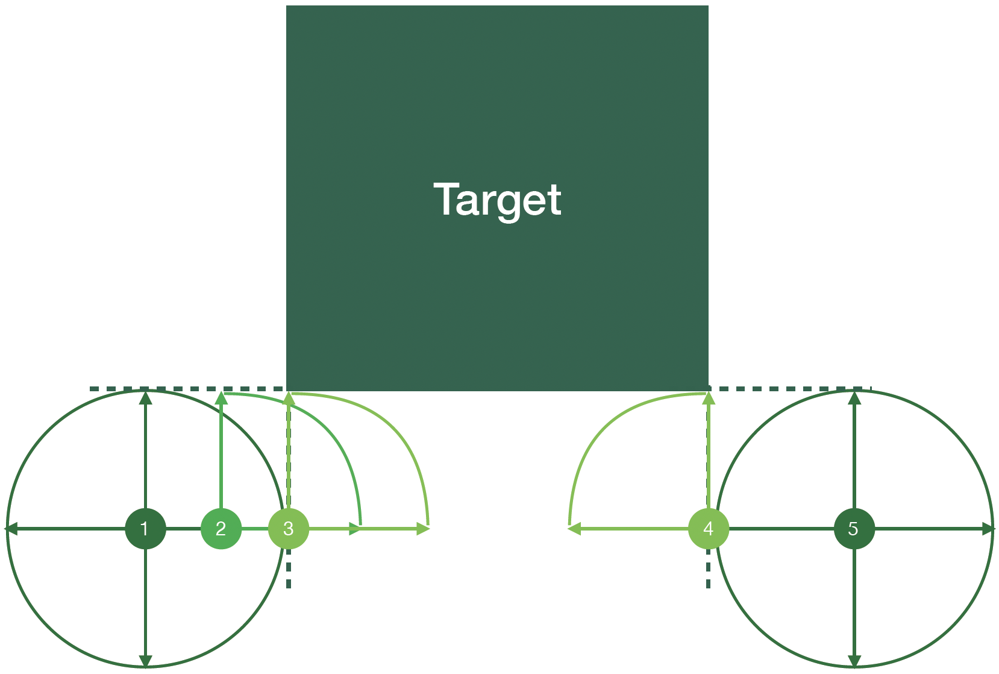
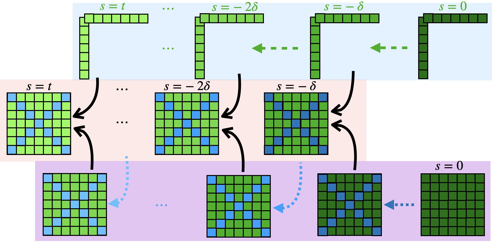
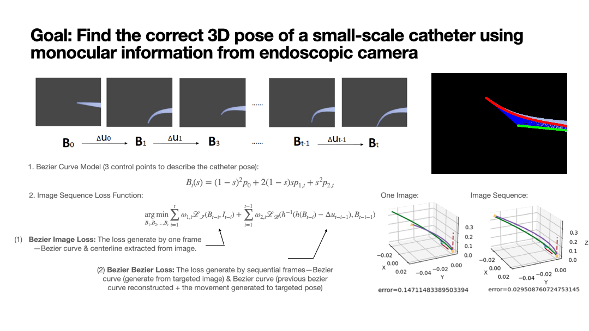
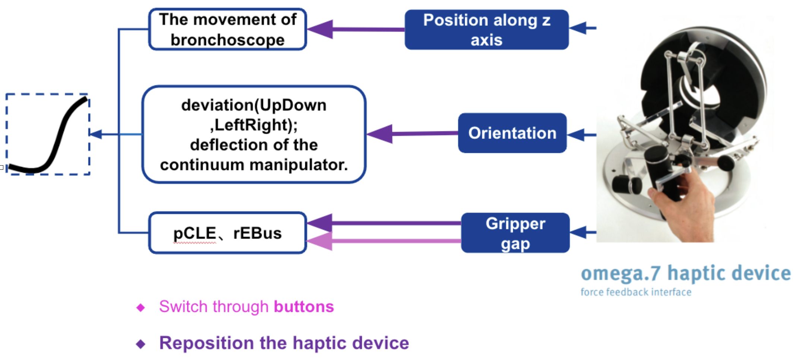
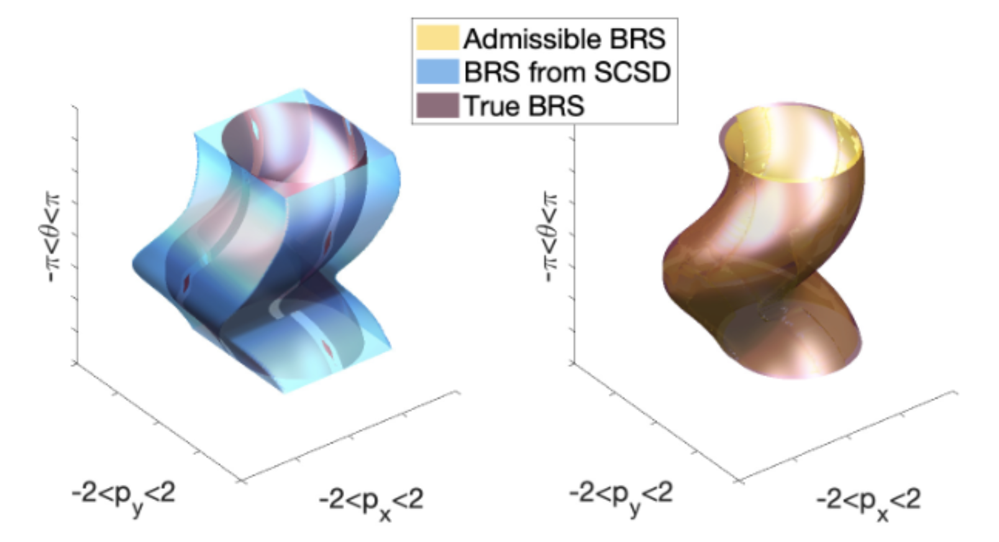
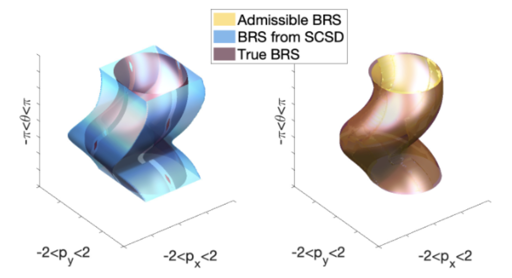

I am a Phd student specialized in Computing Science at Simon Fraser University.
Check out our lab website: Mars Lab.
I obtained my master degree at University of California, San Diego with a major of Mechanical and Aerospace Engineering in The Safe Autonomous Systems Lab .
Previously, I worked as a research assistant in the Institute of Medical Robotics at Shanghai Jiaotong University.
I received my B.Eng degree at Tongji University, China majoring in mechanical design, manufacturing and its automation.
My Research Interest lies in Reachability, Control Theory and Medical Robots.
Skills
Matlab, Python, C/C++, and Java.
Familliar with mechanical design tools such as AutoCAD and SolidWorks.
Love skiing and playing video games at leisure time.
- CMPT 410/726: Machine Learning, Simon Fraser University, 2024 Spring
Research
Leaking Corner Issue
1. Admissible Control:
Hamilton-Jacobi reachability analysis is a useful tool for generating reachable sets and corresponding optimal control policies, but its use in high-dimensional systems is hindered by the "curse of dimensionality." Self-contained subsystem decomposition is a proposed solution, but it can produce conservative or incorrect results due to the "leaking corner issue." This issue arises from the inexact decomposition of the target set and inconsistencies across the computed control policies for each coupled subsystem.
In this work, we define and resolve this issue by introducing the notion of an admissible control set that enforces consistent control actions across the coupled subsystems. Our method efficiently computes exact reachable sets and the corresponding optimal control policy for self-contained subsystems with a decomposable goal (or failure) set. We also provide conservative under-approximations for goal (or failure) sets with inexact decomposition. In this conservative case, a local update method in the full dimensional space can be applied to recover exact results.
By calling the issue ``leaking corner issue'', we mean that it is observed that the incorrectness happens at the corner.
In this work, we have the theoretical proof that it only exists in the corner.
Besides, a local updating procedure is proposed to recover the exact reachable set, which guarantees fast computation and correct result.


How to find the actual 3D shape of a catheter with a low-resolution endoscopic camera?
In this project, a machine-learning based method is used.
The shape of the catheter is assumed as a Bezier Curve with 3 control points.
With the image sequence, the 3D shape information can be optimized to the true value.

This projected is coded with pytorch, and the code can be found at CatheterControl .
Teleoperation for Catheter Control
The multi-shape advantage of continuum manipulator is crucial in minimum invasive surgery.
In hope for easier usage when implementing surgeries, this project is initiated.
In the following, it shows the mapping relationship between the haptic device and the motors. These motors are aimed for driving the cables which are the director of the manipulator's shape.

This projected is coded with ROS using C++ language
 
